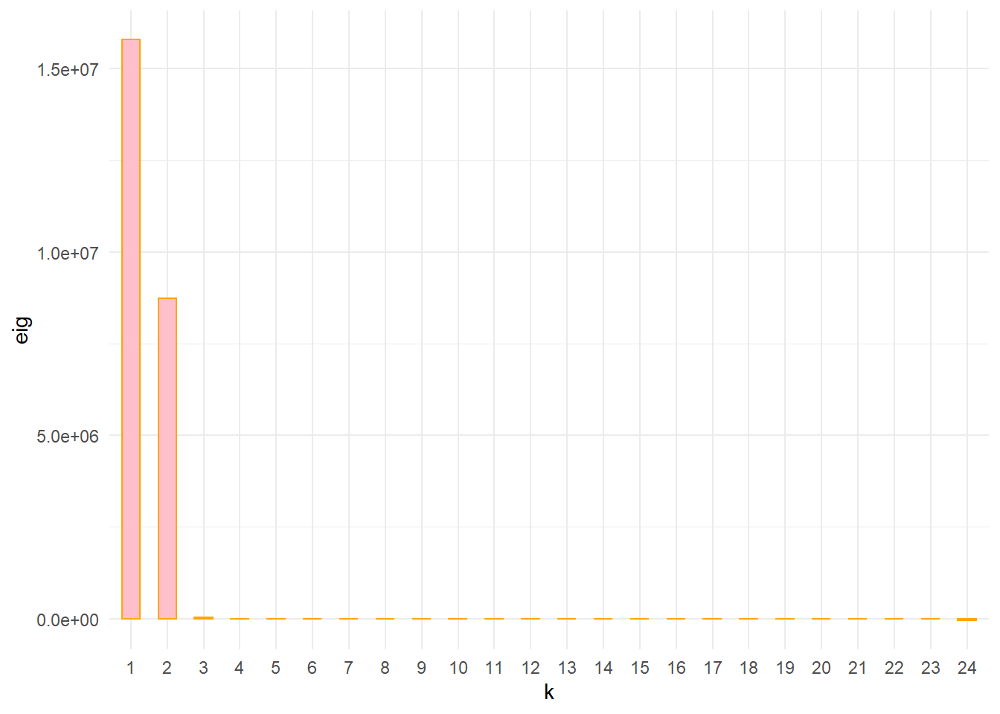
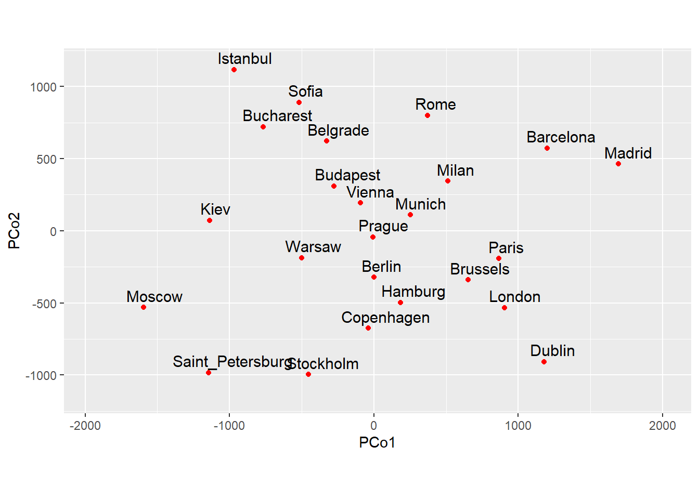
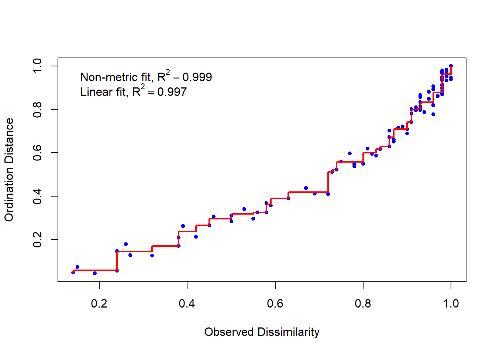
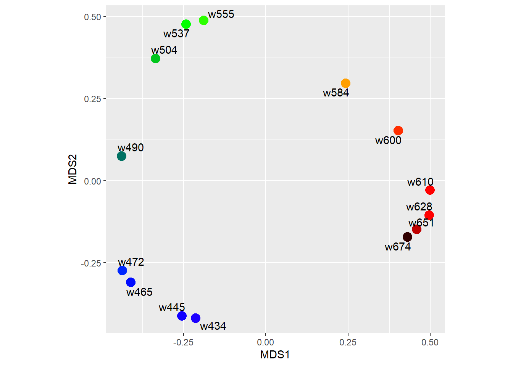
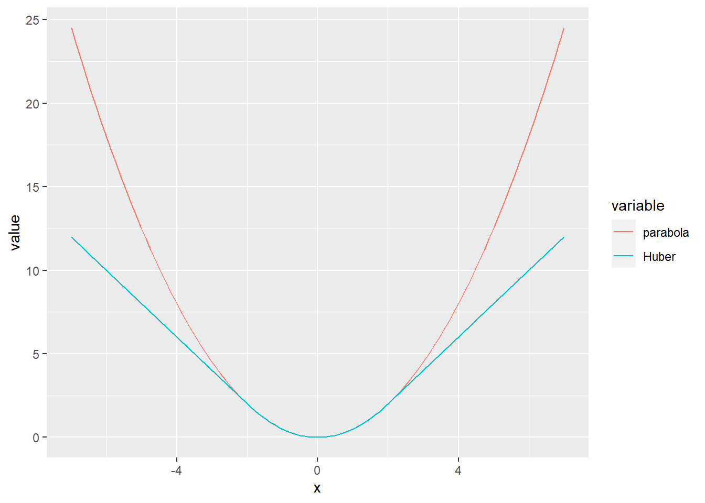
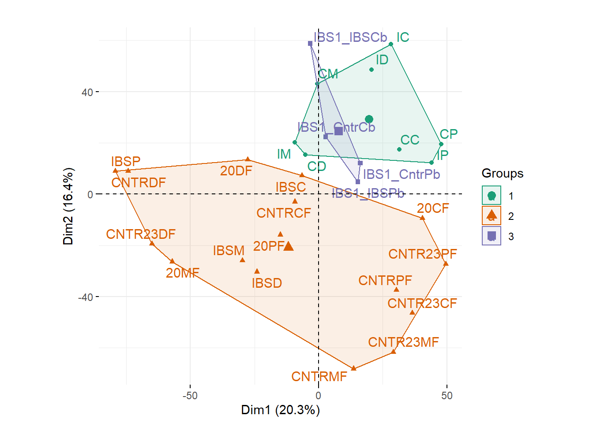
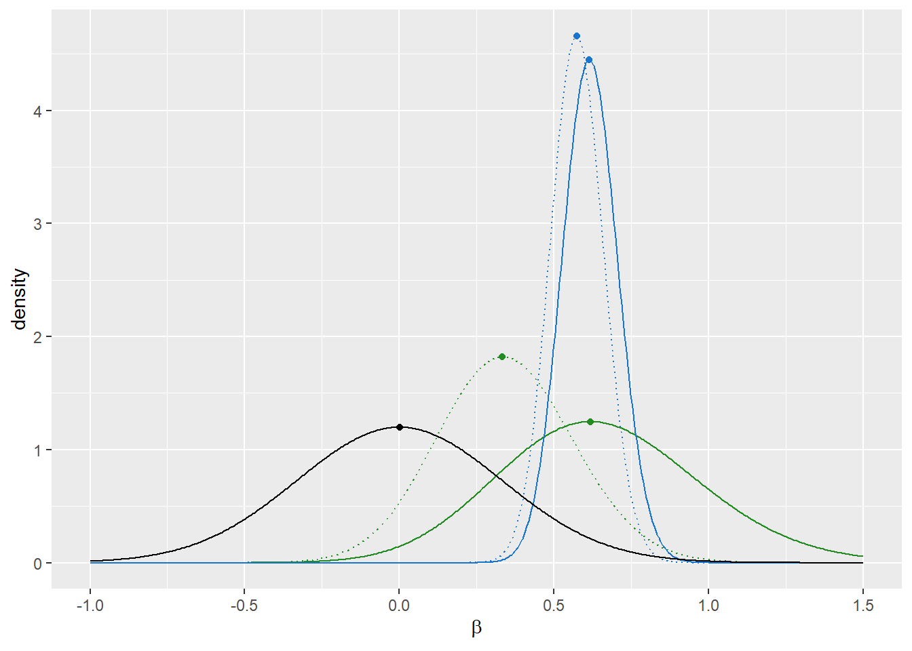
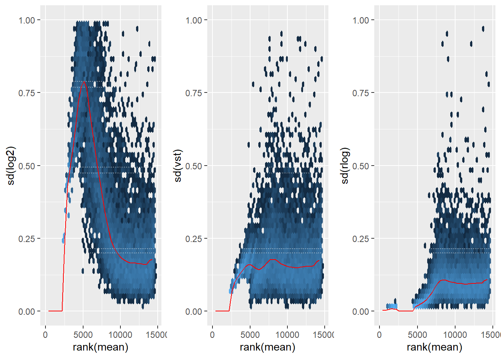
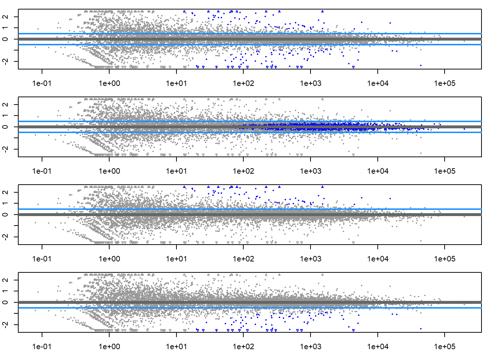
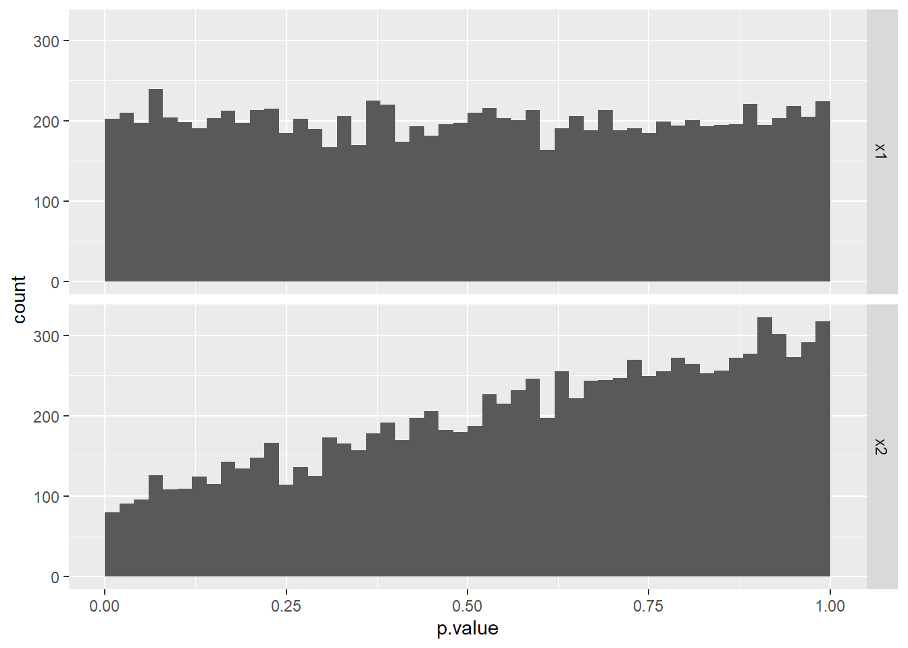

Chapter 8 CAPÍTULO N° 8 - Datos de Conteo de Alto Rendimiento
Capítulo N° 8 recuperado de Estadísticas modernas para la biología moderna
8.1 Objetivos del Cápitulo
- Familiarizaremos con los datos de conteo en aplicaciones de secuenciación de alto rendimiento como RNA-Seq.
- Comprenderemos y modelaremos los procesos de muestreo que subyacen a los datos para poder interpretarlos.
- Detectar y cuantificar cambios sistemáticos entre muestras de diferentes condiciones,no tratadas versus tratadas , donde la tarea es distinguir dichos cambios sistemáticos de las variaciones de muestreo y la variabilidad experimental dentro de las mismas condiciones.
#PAQUETES
library(pacman)
p_load(ggplot2,dplyr)8.2 Datos de Recuento
p_load("pasilla")
fn = system.file("extdata", "pasilla_gene_counts.tsv",
package = "pasilla", mustWork = TRUE)
counts = as.matrix(read.csv(fn, sep = " ", row.names = "gene_id"))Los datos se almacenan como una tabla rectangular en un archivo delimitado por tabuladores, que se ha leído en la matriz counts.
dim(counts)## [1] 14599 7counts[ 2000+(0:3), ]## untreated1 untreated2 untreated3 untreated4 treated1 treated2
## FBgn0020369 3387 4295 1315 1853 4884 2133
## FBgn0020370 3186 4305 1824 2094 3525 1973
## FBgn0020371 1 0 1 1 1 0
## FBgn0020372 38 84 29 28 63 28
## treated3
## FBgn0020369 2165
## FBgn0020370 2120
## FBgn0020371 0
## FBgn0020372 27La matriz cuenta el número de lecturas vistas para cada gen en cada muestra.
8.3 Modelado de Datos de Conteo
8.3.1 Normalización
conditionNames = (sub("[[:digit:]]$", "", colnames(counts))) #$
stopifnot(length(unique(conditionNames)) == 2,
sum(conditionNames=="untreated") == 4,
sum(conditionNames=="treated") == 3)szfcDemo = data.frame(
x = c(2, 4, 6, 6, 8) * 10,
y = c(3, 6, 2, 9, 12) * 10,
name = LETTERS[1:5],
check.names = FALSE)
slopes = c(
blue = with(szfcDemo, sum(y) / sum(x)),
red = szfcDemo[, c("x", "y")] |> as.matrix() |>
(DESeq2::estimateSizeFactorsForMatrix)() |> (\(x) x[2]/x[1])() |> as.vector()
)
ggplot(szfcDemo, aes(x = x, y = y, label = name)) + geom_point() +
coord_fixed() + xlim(c(0, 128)) + ylim(c(0, 128)) + xlab("sample 1") + ylab("sample 2") +
geom_text(hjust= 0.5, vjust = -0.6) +
geom_abline(slope = slopes[1], col = names(slopes)[1]) +
geom_abline(slope = slopes[2], col = names(slopes)[2])
p_load("tibble","DESeq2")
ggplot(tibble(
`size factor` = estimateSizeFactorsForMatrix(counts),
`sum` = colSums(counts)), aes(x = `size factor`, y = `sum`)) +
geom_point()
p_load("ggplot2", "matrixStats")
sf = estimateSizeFactorsForMatrix(counts)
ncounts = counts / matrix(sf,
byrow = TRUE, ncol = ncol(counts), nrow = nrow(counts))
uncounts = ncounts[, grep("^untreated", colnames(ncounts)),
drop = FALSE]
ggplot(tibble(
mean = rowMeans(uncounts),
var = rowVars( uncounts)),
aes(x = log(mean), y = log(var))) +
geom_hex() + coord_fixed() + theme(legend.position = "none") +
geom_abline(slope = 1:2, color = c("forestgreen", "red"))## Warning: Removed 2713 rows containing non-finite values (stat_binhex).
8.4 Un Análisis Básico
annotationFile = system.file("extdata",
"pasilla_sample_annotation.csv",
package = "pasilla", mustWork = TRUE)
pasillaSampleAnno = readr::read_csv(annotationFile)## Rows: 7 Columns: 6
## -- Column specification --------------------------------------------------------
## Delimiter: ","
## chr (4): file, condition, type, total number of reads
## dbl (2): number of lanes, exon counts
##
## i Use `spec()` to retrieve the full column specification for this data.
## i Specify the column types or set `show_col_types = FALSE` to quiet this message.pasillaSampleAnno## # A tibble: 7 x 6
## file condition type `number of lan~` `total number ~` `exon counts`
## <chr> <chr> <chr> <dbl> <chr> <dbl>
## 1 treated1fb treated single~ 5 35158667 15679615
## 2 treated2fb treated paired~ 2 12242535 (x2) 15620018
## 3 treated3fb treated paired~ 2 12443664 (x2) 12733865
## 4 untreated1fb untreated single~ 2 17812866 14924838
## 5 untreated2fb untreated single~ 6 34284521 20764558
## 6 untreated3fb untreated paired~ 2 10542625 (x2) 10283129
## 7 untreated4fb untreated paired~ 2 12214974 (x2) 11653031p_load("dplyr")
pasillaSampleAnno = mutate(pasillaSampleAnno,
condition = factor(condition, levels = c("untreated", "treated")),
type = factor(sub("-.*", "", type), levels = c("single", "paired")))stopifnot(
!any(is.na(pasillaSampleAnno$condition)),
!any(is.na(pasillaSampleAnno$type)),
sum(pasillaSampleAnno$type == "single") == 3,
sum(pasillaSampleAnno$type == "paired") == 4)Se obaserva que el diseño está aproximadamente equilibrado entre el factor de interés, condition, y el “factor de molestia” type:
with(pasillaSampleAnno,
table(condition, type))## type
## condition single paired
## untreated 2 2
## treated 1 2Se usa la función constructora DESeqDataSetFromMatrixpara crear un DESeqDataSet a partir de la matriz de datos de conteo countsy el marco de datos de anotación de muestra pasilla.
mt = match(colnames(counts), sub("fb$", "", pasillaSampleAnno$file))
stopifnot(!any(is.na(mt)))
p_load("DESeq2")
pasilla = DESeqDataSetFromMatrix(
countData = counts,
colData = pasillaSampleAnno[mt, ],
design = ~ condition)
class(pasilla)## [1] "DESeqDataSet"
## attr(,"package")
## [1] "DESeq2"is(pasilla, "SummarizedExperiment")## [1] TRUEEjercicio
¿Cómo podemos acceder a los metadatos de fila de un SummarizedExperiment , es decir, cómo podemos leerlo, cómo podemos cambiarlo?
pasilla = DESeq(pasilla)## estimating size factors## estimating dispersions## gene-wise dispersion estimates## mean-dispersion relationship## final dispersion estimates## fitting model and testingres = results(pasilla)
res[order(res$padj), ] |> head()## log2 fold change (MLE): condition treated vs untreated
## Wald test p-value: condition treated vs untreated
## DataFrame with 6 rows and 6 columns
## baseMean log2FoldChange lfcSE stat pvalue
## <numeric> <numeric> <numeric> <numeric> <numeric>
## FBgn0039155 730.596 -4.61901 0.1687068 -27.3789 4.88599e-165
## FBgn0025111 1501.411 2.89986 0.1269205 22.8479 1.53430e-115
## FBgn0029167 3706.117 -2.19700 0.0969888 -22.6521 1.33042e-113
## FBgn0003360 4343.035 -3.17967 0.1435264 -22.1539 9.56283e-109
## FBgn0035085 638.233 -2.56041 0.1372952 -18.6490 1.28772e-77
## FBgn0039827 261.916 -4.16252 0.2325888 -17.8965 1.25663e-71
## padj
## <numeric>
## FBgn0039155 4.06661e-161
## FBgn0025111 6.38497e-112
## FBgn0029167 3.69104e-110
## FBgn0003360 1.98979e-105
## FBgn0035085 2.14354e-74
## FBgn0039827 1.74316e-688.4.1 Exploración de Resultados
ggplot(as(res, "data.frame"), aes(x = pvalue)) +
geom_histogram(binwidth = 0.01, fill = "Royalblue", boundary = 0)## Warning: Removed 2241 rows containing non-finite values (stat_bin).
Histograma de valores p de un análisis de expresión diferencial.
thehist = hist(res$pvalue, breaks = 100, plot=FALSE)
thehist$bgl = median(thehist$counts)plotMA(pasilla, ylim = c( -2, 2))
Cambio de pliegue frente a la media de recuentos normalizados por factor de tamaño.
pas_rlog = rlogTransformation(pasilla)
plotPCA(pas_rlog, intgroup=c("condition", "type")) + coord_fixed()## Coordinate system already present. Adding new coordinate system, which will replace the existing one. Las 7 muestras se muestran en el plano 2D atravesadas por sus dos primeros componentes principales.
Ejercicio
¿Los ejes del gráfico PCA siempre tienen que alinearse con covariables experimentales específicas?
Los mapas de calor pueden ser una forma poderosa de obtener rápidamente una descripción general de un conjunto de datos similar a una matriz, incluidas las tablas de conteo.
p_load("pheatmap")
select = order(rowMeans(assay(pas_rlog)), decreasing = TRUE)[1:30]
pheatmap( assay(pas_rlog)[select, ],
scale = "row",
annotation_col = as.data.frame(
colData(pas_rlog)[, c("condition", "type")] )) Mapa de calor de datos transformados logarítmicos regularizados de los 30 genes principales.
Mapa de calor de datos transformados logarítmicos regularizados de los 30 genes principales.
#guardar resultado en un csv
#write.csv(as.data.frame(res), file = "treated_vs_untreated.csv")rho = function(x, s)
ifelse(abs(x) < s, x^2 / 2, s * abs(x) - s^2 / 2)
df = tibble(
x = seq(-7, 7, length.out = 100),
parabola = x ^ 2 / 2,
Huber = rho(x, s = 2))
ggplot(reshape2::melt(df, id.vars = "x"),
aes(x = x, y = value, col = variable)) + geom_line() ## Análisis de dos factores de los datos del corredor
pasillaTwoFactor = pasilla
design(pasillaTwoFactor) = formula(~ type + condition)
pasillaTwoFactor = DESeq(pasillaTwoFactor)## using pre-existing size factors## estimating dispersions## found already estimated dispersions, replacing these## gene-wise dispersion estimates## mean-dispersion relationship## final dispersion estimates## fitting model and testingNuevamente, accedemos a los resultados usando el resultsfunción, que devuelve un dataframe con las estadísticas de cada gen.
res2 = results(pasillaTwoFactor)
head(res2, n = 3)## log2 fold change (MLE): condition treated vs untreated
## Wald test p-value: condition treated vs untreated
## DataFrame with 3 rows and 6 columns
## baseMean log2FoldChange lfcSE stat pvalue padj
## <numeric> <numeric> <numeric> <numeric> <numeric> <numeric>
## FBgn0000003 0.171569 0.6745518 3.871091 0.1742537 0.861666 NA
## FBgn0000008 95.144079 -0.0406731 0.222215 -0.1830351 0.854770 0.951975
## FBgn0000014 1.056572 -0.0849880 2.111821 -0.0402439 0.967899 NALa función resultstoma un argumento contrastque permite especificar el nombre de la variable, el nivel que corresponde al numerador del cambio de pliegue y el nivel que corresponde al denominador del cambio de pliegue.
resType = results(pasillaTwoFactor,
contrast = c("type", "single", "paired"))
head(resType, n = 3)## log2 fold change (MLE): type single vs paired
## Wald test p-value: type single vs paired
## DataFrame with 3 rows and 6 columns
## baseMean log2FoldChange lfcSE stat pvalue padj
## <numeric> <numeric> <numeric> <numeric> <numeric> <numeric>
## FBgn0000003 0.171569 -1.611546 3.871083 -0.416304 0.677188 NA
## FBgn0000008 95.144079 -0.262255 0.220686 -1.188362 0.234691 0.543822
## FBgn0000014 1.056572 3.290586 2.087243 1.576522 0.114905 NAGrafiquemos los valores p de ambos análisis uno contra el otro.
trsf = function(x) ifelse(is.na(x), 0, (-log10(x)) ^ (1/6))
ggplot(tibble(pOne = res$pvalue,
pTwo = res2$pvalue),
aes(x = trsf(pOne), y = trsf(pTwo))) +
geom_hex(bins = 75) + coord_fixed() +
xlab("Single factor analysis (condition)") +
ylab("Two factor analysis (type + condition)") +
geom_abline(col = "orange") Los valores p en el análisis de dos factores son similares a los del análisis de un factor, pero generalmente son más pequeños. El análisis más sofisticado ha llevado a un aumento de poder, aunque modesto.
compareRes = table(
`simple analysis` = res$padj < 0.1,
`two factor` = res2$padj < 0.1 )
addmargins( compareRes )## two factor
## simple analysis FALSE TRUE Sum
## FALSE 6973 289 7262
## TRUE 25 1036 1061
## Sum 6998 1325 8323# The following code is based on guidance from Mike Love
res1 = results(pasilla, cooksCutoff = FALSE)
res2 = lfcShrink(pasilla, coef = "condition_treated_vs_untreated", type="normal", res = res1)## using 'normal' for LFC shrinkage, the Normal prior from Love et al (2014).
##
## Note that type='apeglm' and type='ashr' have shown to have less bias than type='normal'.
## See ?lfcShrink for more details on shrinkage type, and the DESeq2 vignette.
## Reference: https://doi.org/10.1093/bioinformatics/bty895# Something like the two lines commented out below may be used to reproduce
# how Mike Love selected the two genes: they should have similar intercepts,
# large unshrunken fold change and very different Wald statistic (i.e., have
# small / large dispersion, respectively):
#
# with(res1,
# plot(baseMean, log2FoldChange, log = "x", ylim = c(0, 3), xlim = c(10, 1e5),
# col = ifelse(padj < 0.1, "red", "black"), cex = log(abs(stat))))
# rownames(res1)[with(res1, identify(baseMean, log2FoldChange))]
genes = c(A = "FBgn0053926", B = "FBgn0260933")
cols = c(FBgn0053926 = "forestgreen", FBgn0260933 = "dodgerblue3", prior = "black")
df1 = tibble(
k = as.vector(counts(pasilla, normalized = TRUE)[genes, ]),
condition = rep(colData(pasilla)[["condition"]], each = length(genes)),
gene = rep(genes, times = ncol(pasilla)))
beta = seq(from = -1, to = 1.5, length = 500)
kounts = counts(pasilla)[genes,, drop = FALSE]
disps = dispersions(pasilla[genes, ]) |> `names<-`(genes)
sf = sizeFactors(pasilla)
cond = as.numeric(pasilla$condition)-1
betaPriorVar = priorInfo(res2)$betaPriorVar
priorSigma = sqrt(betaPriorVar["conditiontreated"])
prior = dnorm(beta, mean = 0, sd = priorSigma)
likelihood = function(k, alpha, intercept) {
z = vapply(beta, function(b) {
prod(dnbinom(k, mu = sf * 2^(intercept + b * cond), size = 1/alpha))
}, numeric(1))
z / (sum(z) * diff(beta[1:2]))
}
posterior = function(k, alpha, intercept) {
z = likelihood(k, alpha, intercept) * prior
z / (sum(z) * diff(beta[1:2]))
}
intercepts = with(mcols(pasilla[genes,]), Intercept) |> `names<-`(genes)
df2 = bind_rows(
tibble(beta = beta, y = prior, gene = "prior", what = "pre"),
bind_rows(
lapply(genes, function(i) bind_rows(
tibble(beta = beta, gene = i, what = "pre",
y = likelihood(k = kounts[i, ], alpha = disps[i],
intercept = intercepts[i])),
tibble(beta = beta, gene = i, what = "post",
y = posterior(k = kounts[i, ], alpha = disps[i],
intercept = intercepts[i]))))
)
)
is_max = function(y)
ifelse(seq(along = y) == which.max(y), y, NA_real_)
df2 %<>% group_by(gene, what) %>% mutate(py = is_max(y))
## some consistency checks:
deseqNoPrior = res1[genes, "log2FoldChange"]
deseqPrior = res2[genes, "log2FoldChange"]
mleFromPlot = c(beta[which.max(likelihood(kounts[1,], disps[1], intercepts[1]))],
beta[which.max(likelihood(kounts[2,], disps[2], intercepts[2]))])
mapFromPlot = c(beta[which.max( posterior(kounts[1,], disps[1], intercepts[1]))],
beta[which.max( posterior(kounts[2,], disps[2], intercepts[2]))])
stopifnot(all(abs(deseqNoPrior - mleFromPlot) < 0.002))8.5 Otros conceptos estadísticos
8.5.1 Intercambio de información de dispersión entre genes
p_load("ggbeeswarm")
ggplot(df1, aes(x = condition, y = k, col = gene)) + geom_beeswarm(cex = 5) +
facet_grid(. ~ gene) + ylab("normalized counts") + scale_y_log10() +
scale_color_manual(values = cols) + theme(legend.position = "none")
ggplot(df2, aes(x = beta, col = gene, linetype = what)) +
geom_line(aes(y = y)) + geom_point(aes(y = py)) +
scale_color_manual(values = cols) + theme(legend.position = "none") +
scale_linetype_manual(values = c(pre = "solid", post = "dotted")) +
xlab(expression(beta)) + ylab("density")## Warning: Removed 2495 rows containing missing values (geom_point).
8.5.2 Transformaciones de datos de conteo
vsp = varianceStabilizingTransformation(pasilla)j = 1
ggplot(tibble(
x = assay(pasilla)[, j],
VST = assay(vsp)[, j],
log2 = log2(assay(pasilla)[, j])) |>
reshape2::melt(id.vars = "x"),
aes(x = x, y = value, col = variable)) +
geom_line() + xlim(c(0, 600)) + ylim(c(0, 9)) +
xlab("counts") + ylab("transformed")## Warning: Removed 8234 row(s) containing missing values (geom_path).
Gráfica de transformación estabilizadora de varianza para los datos de una de las muestras, y para comparación también del log 2.
p_load("vsn")
rlp = rlogTransformation(pasilla)
msd = function(x)
meanSdPlot(x, plot = FALSE)$gg + ylim(c(0, 1)) +
theme(legend.position = "none")
gridExtra::grid.arrange(
msd(log2(counts(pasilla, normalized = TRUE) + 1)) +
ylab("sd(log2)"),
msd(assay(vsp)) + ylab("sd(vst)"),
msd(assay(rlp)) + ylab("sd(rlog)"),
ncol = 3
)## Warning: Removed 463 rows containing non-finite values (stat_binhex).## Warning: Removed 14 rows containing missing values (geom_hex).## Warning: Removed 21 rows containing non-finite values (stat_binhex).## Warning: Removed 9 rows containing missing values (geom_hex).## Warning: Removed 2 rows containing non-finite values (stat_binhex).## Warning: Removed 20 rows containing missing values (geom_hex). ### Pruebas de log 2 cambio de pliegue por encima o por debajo de un umbral
par(mfrow = c(4, 1), mar = c(2, 2, 1, 1))
myMA = function(h, v, theta = 0.5) {
plotMA(pasilla, lfcThreshold = theta, altHypothesis = h,
ylim = c(-2.5, 2.5))
abline(h = v * theta, col = "dodgerblue", lwd = 2)
}
myMA("greaterAbs", c(-1, 1))
myMA("lessAbs", c(-1, 1))
myMA("greater", 1)
myMA("less", -1 ) ## Ejercicios
Considere el siguiente modelo generativo simple para un histograma de valores p que muestra un agotamiento de valores p pequeños. Los valores p se muestran a partir de un análisis de expresión diferencial (en este caso, simple t -pruebas) en ausencia de una asociación con la variable categórica de dos niveles probada groups. Mientras que el histograma es aproximadamente uniforme para x1, los valores p pequeños se agotan para x2. Esto se debe a que el lote (codificado por la variable homónima), que es ortogonal a groupsy equilibrado, introduce una variabilidad adicional que infla el denominador del estadístico de prueba.
p_load("magrittr")
ng = 10000
ns = 12
x1 = x2 = matrix(rnorm(ns * ng), ncol = ns, nrow= ng)
group = factor(letters[1 + seq_len(ns) %% 2]) %T>% print## [1] b a b a b a b a b a b a
## Levels: a bbatch = factor(ifelse(seq_len(ns) <= ns/2, "B1", "B2")) %T>% print## [1] B1 B1 B1 B1 B1 B1 B2 B2 B2 B2 B2 B2
## Levels: B1 B2table(group, batch)## batch
## group B1 B2
## a 3 3
## b 3 3x2[, batch=="B2"] = x2[, batch=="B2"] + 2 * rnorm(ng)
pvals = rbind(
cbind(type = "x1", genefilter::rowttests(x1, fac = group)),
cbind(type = "x2", genefilter::rowttests(x2, fac = group)))
ggplot(pvals, aes(x = p.value)) +
geom_histogram(binwidth = 0.02, boundary = 0) +
facet_grid(type ~ .)